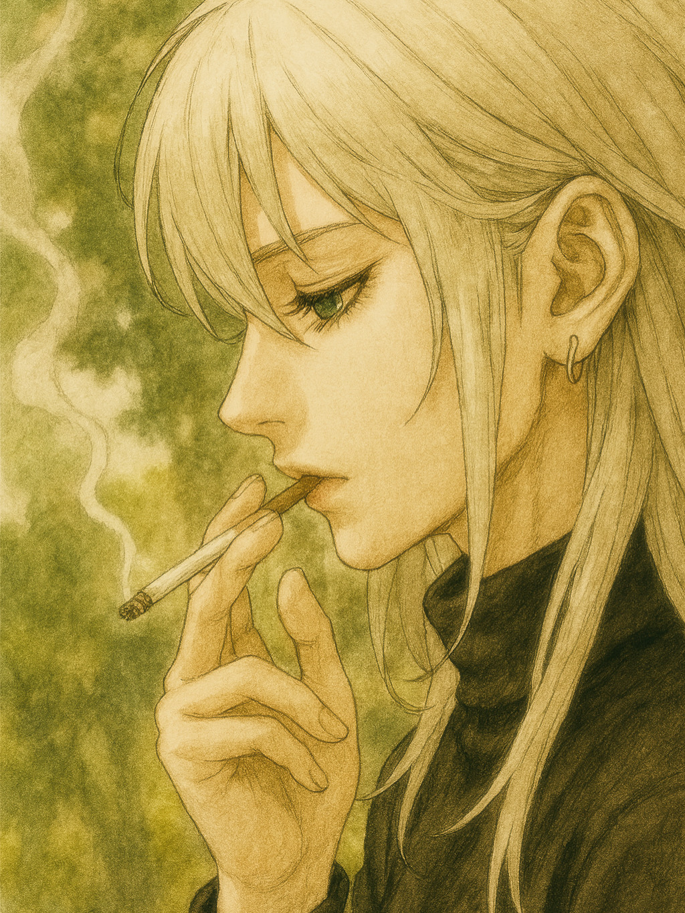

いつかこの景色をお前と二人で再び見ることができるのなら。
許されるのなら。
いつものようにライフルの装填の点検をしていた。
暑い日だったと覚えている。
アストラ軍が「象徴」と呼ぶ少女を掲げ、planetへの攻撃を仕掛けてからすでに1年が経過していた。
戦況は依然として膠着状態で、一進一退が続いていた。
俺は戦場の荒くれものとして、第一線に出ていた。
いくつもの修羅場を超えて、奇跡的にまだ生きていた。偶然とはいえ、運も良かった。持ち前の運動能力は思った以上に戦場では活きていた。身体が躍動していたと言っても過言ではなかたった。
白銀のオオカミと名付けられた。
縦横無尽に敵を翻弄し、仕留め、生け捕り、葬った。
それを何とも思わない日々が続いていた。
そんな時、あいつに話しかけられた。
「白銀のオオカミってあんた？」
黒の肩で切りそろえられた端正な顔立ちの戦士と思われる一人が話しかけてきた。
俺は誰だ？お前と思いながら、同じ治安維持部隊の腕章を確認してうなずいた。第二連隊。前線のエリートだ。
「あ、そうなんだ。ふーん。」と言いながらあいつは、興味深げに俺のまわりを二、三度ぐるっと回りながら言った。
とっさに身構えたが、とりあえず気の抜けた声を確認しながら、間合いをとった。
「知ってるよ、あんたのこと」
じろじろとぶしつけな目線を隠さずにあいつは切り出した。どうやら俺に何か話がありそうだ。
「第５連隊から第２連隊に引き抜くって噂。持ち切り。」
引き抜き？
俺は怪訝に思った。なぜなら、こちとら何も知らされてない。
「・・・で、あんたは？」
少し圧をかけながら、言った。
「私は第２連隊の西の果てと呼ばれている」
「西の果て？」
意味が分からなかった。治安維持部隊では愛称がつくのが通常ではあるが、たいていわかりやすい愛称であることが通常だ。西の果て？意味が分からない。
怪訝な顔を隠さずにいると、あいつはふふと笑いながら続けた。
「すごい成績だからみんなあんたのことで持ち切り。興味あったから、今日確認しに来た」
そうか、偵察というやつか。
第２連隊にしても第５連隊にしても、わけのわからない人間をそう簡単には信用しない。当たり前だ。命を預けられる人間なのか、とっさにかぎ分けれられるようじゃないと生死にかかわる。
「案外、小柄なのね。でも銃の腕前はすごいんだろうな」
戦士というにはあまりに柔らかい顔であいつが言ったことを覚えている。
無骨な人間の多い第一線の連隊にこの柔らかさで務まるのだろうか？ただし、第２連隊は精鋭ばかりだと聞いている。
俺は興味を惹かれたものの、偵察に来た人間においそれと自分のことをぺらぺらしゃべるバカではない。
無言でいると、察したのか「西の果て」は、少し間をおいて
「すぐに移動の命令が下される。そうしたら、よろしくね」
と言って、去っていった。
・・・それがあいつとの接触の最初だった。
がやがやと騒がしい食堂へ入った。
第２連隊への移動は「西の果て」が言ったとおり、すぐ命令が下り、陣を張ってる部隊にすぐ徴収された。
第２連隊の食堂へ入ると、皆一瞬俺を見た。
するどい視線。
うっとなりながら、パンとスープの入ったトレイを、出口に近い座席に置き、俺は挨拶もなく食べ始めた。
視線をはずさないまま、第２連隊の連中は、静かに食事に戻った。
ただ、一人、パンもスープも頬張ることなくじっとこっちを見つめている人間がいた。「西の果て」だ。
俺はあいつの視線を感じながら、もくもくと食した。あの問いかけるようなまなざしを視界の隅に入れながら。
ドンという音とともに、横にあった戦車が爆破された。
破片が飛び散る。
すさまじい銃声の嵐が響き渡る。
派手な爆音をさせる銃はアストラ軍の武器の特徴だ。
どこだかの武器商人から仕入れている。
派手さはあるが、精度は良くない。
そんな分析をしながら、俺は敵を討つために走った。
第２連隊に来てから、ますます感が冴えた気がしていた。何しろ、周りも精鋭だらけだ。腕が鳴る。
きぇーーーというアストラ軍人の奇妙な叫び声を聞き、また味方が「仕留めた」と思った。
やった。馬鹿な事を。planetに喧嘩売ってくるやつなんて、片っ端から皆殺しだ。
そう思って走った。
目の端に、何かが映った。
瞬間銃の引き金を引いた。
ひゅんと相手も打ってきたが、はずしやがった。こっちは無傷だ。ざまを見ろ。
黒い影が岩陰から出てきた瞬間、装填した銃に照準を合わせた。
・・・・・・・・・・・・・・・・
その瞬間。
がつっと銃が上にから回った。
誰かが俺の銃を敵から外した。
「・・・・西の果て。何しやがる」
俺は言った。
右側から俺の銃を上に蹴り挙げた人物の呼び名を静かに言った。
敵が目の前に転がってきた。
「白銀のオオカミ、見ろ。子供だ」
俺は目の前に転がり出て、血まみれの腹を抱えながら声も出さずうずくまる敵を見た。
まだ年端もいかない子供だった。あどけない顔が真っ青になり、こっちを薄気味悪い目で見上げている。媚もない。死を覚悟した目つきだ。
「・・・子供への攻撃はplanetの望むものではない」
静かに「西の果て」は言った。
はっとなった。確かにplanetの軍人規定は、子供への武力攻撃はしてはならない。必ず生け捕ることを最終目的にしている。
しかし。
「こいつはさっき俺を打ってきた。やらなかったらやられてる。」
敵から目を離さない「西の果て」に言ったが、反応はなかった。無言で、敵の最期を見届け、銃を下ろし、俺から離れていった。
最後に
「お前を軍規違反にはかけない。その代わり、明日の夜明け前、連隊のある場所の近くにある橋まで来い」
と言って。
解せなかったが、軍規違反は俺の望むところではなかったので、俺は何も言い返さずに、軍に戻った。
軍は勝利していた。
あくる朝、「西の果て」が言う橋へ向かった。
朝の美しい光が東から開けて来ている。planetの夜明けだ。
橋には人影があった。黒髪が肩で切りそろえられた端正な横顔が見えてきた。
「・・・白銀のオオカミ、ありがとう。ここまで来てくれて」
少し疲れが見える横顔が俺に話かけた。
俺は無言で、橋に寄り掛かる「西の果て」の横に並んで、寄り掛かった。
「なぜ、私が軍に入ったか、話そうか。西の果てと呼ばれる理由も」
俺はうなずいた。
「・・・私は生粋の軍人ではない。もともとは、伝令だ。死を確認した仲間の家族のもとに、その死の最期を伝える役目の」
「・・・ああ」
と俺は小さくつぶやいた。なんとなく、俺とは違う人間のにおいはしていた。
「・・・ずっと疑問に思っていた。戦場に出るうちに、なぜ私たちは戦っているのかと。仲間の死を見届けるうちに、敵の最期も見るようになった。・・・昨日見たような子供も多かった。」
「・・・・」
「一体なぜ私たちは攻撃を受け、戦っているのか。何故アストラ軍は、あそこまで執拗に我々に攻撃を加えるのをやめないのか、ずっと考えていた。だから、最前線に出ることを望んだ。相手からの情報がここは多いからだ。・・・でも待っていたのは、死のにおいばかりする血なまぐさい戦場の現実だ。・・・分かるか」
うなずいた。
朝の光はゆっくりと確かにplanetを鮮やかな光に包みこもうとしていた。
「感情がマヒしそうになって、それでも考えることを諦めることが出来ない。・・・第２連隊の仲間はすでに、感情が死んでる。でなければ、あそこまでの戦績は上げられない」
俺が以前から思っていたことと重なる。第２連隊の連戦を極めた軍人の中にいると、だんだんと自分の力量もあがっていくが、同時に何かを失っていくような気がうっすらしていた。
「白銀のオオカミ、お前の髪はきれいだな。」
突然、「西の果て」は話題を変えた。
はっ？となった俺に「西の果て」は続けた。
「この朝の希望の光を受け取れなかった人間の死の上に私はいる。いつも日が沈む西の果てに自分が向かっているような気がしてならないんだ」
ああ、と俺はうなずいた。
「それがあんたの愛称の理由か」
ふふ、と「西の果て」は笑う。
「この話はいつも第２連隊に来た人間にはしている。だから「西の果て」。ただどう受け取られてるかは仲間に聞いたことないからわからないけど、すくなくともあなたは真剣に聞いてくれた」
俺は沈黙するしかできなかった。おそらく試しているのだ。この話を聞いて、どう変化するか。それともしないか。おそらく後者の人間ばかり見てきたのかもしれない。何も変わらない。何も問うこともしない。考えることを放棄して戦う仲間をずっと見てきたのだ。
「今日の朝の光、いつにも増して美しい。お前と話せてよかった。だって、私はあなたに何かしら惹かれるものを感じていたから」
ありがとう。と俺は口の中でごもった。
俺も感じていた。まとう匂いは違えど、興味を惹かれる人間であることは間違いなかった。
この光をまた二人で見たい。美しい朝焼けを。そう思った。
アストラ軍への空爆をplanet側は開始していた。
橋の上での会話から一週間がたっていた。
俺と「西の果て」はその後、行動を共にするようになっていた。
空爆は表向き成功だと伝えられていたが、アストラ軍の抵抗も極まり、planet側の死傷者も増えていった。
大規模な残党狩りをすると発表されたとき、俺は何故かいつもと違う嫌な予感がしていた。
空爆は通常、相手の占領地で行われる。地上戦は最後の手段だ。
過酷な戦いになりそうだとの予感と、何故だか胸のざわつきをおさえられないでいた。
侵攻開始直後から、アストラ軍の徹底抗戦が始まり、負傷者が見る間に増えていった。
第２連隊を投入するという指令が下った午後、「西の果て」が俺を呼び止めた。
「どうした」
ざわついた胸の内をみすかされまいと俺はぶっきらぼうに言った。
「・・・これを」
胸をまさぐりネックレスを首からはずし、「西の果て」は俺にそれを手渡した。
「私に何かあったら、これを家族のもとに届けてほしい」
「そんなの受け取れない。伝令はもともとお前の仕事だろ？ふざけるなよ」
受け取らなかった。今となっては、なぜあの時素直に胸の内を語らなかったのだろうと思う。
「西の果て」は少し困ったような顔をして、「わかった。」と言った後、「お互いに粘ろう」とらしくない励ましをして軍に戻っていった。
ダダダダっと相手側が撃ち、またダダダダっと、こちらが撃ち返す。
地上戦に投入され、市街戦が始まった。
俺は何故だか気分が悪くなりながらも、なんとか敵の猛攻の中を、敵基地陣内深くまで進攻に成功していた。
昨夜の「西の果て」の言動に違和感を感じていたからかもしれない。
俺はちらっと後方にいる「西の果て」を見る。
相変わらず端正な顔立ちは、戦場においては一層表情が見えず、こちらからの合図にも気づかなかった。俺も疲れていた。
ターンという、音が響く。はっとまた我に返る。
どこかにスナイパーがいる。
味方がやられた。
こいつはどこかに潜伏し、こちらを見張り、仲間に我々の位置を知らせている。殺らなければ・・・！！！
俺はとっさに連隊から外れ、建物の陰に入った。
どこだ。
どこから撃っている。
必ず仕留める！
一瞬光をまぶしく感じた。
わずか５メートル先の建物の窓から銃口がこちらを覗いてるのが見えた瞬間だった。
撃たれた。
右肩か！
殺られる！
瞬間、影が俺にかぶり、誰かの背中が相手のスナイパーを撃ったのが分かった。
・・・・西の果て！
「立て、オオカミ。連隊が突入成功した」
との短い言葉とともに、ぐいっと身体を起こされ、左肩を西の果てにかつがれて、俺たちは建物から出て、連隊に合流した。
やや短い攻撃があったものの、すぐに相手の攻撃がやんだ。ひとしきり残党狩りが終わった後、仲間から、相手の攻撃なしとの無線が聞こえた。
さすが、第２連隊だ！と俺は思った。
わーっと歓声があがり、planet軍の第２連隊の面々が喜びの雄たけびを上げ、本部に奪還成功とわめきちらしている声が聞こえた。
痛む右肩を抑え、俺は「西の果て」の方を抱きしめ、「やったな！」と叫んだ。
・・・・
その瞬間、腕の中に抱いた西の果ての身体が静かに地面に沈んでいくのが分かった。
・・・撃たれていた。
俺は言葉もなく、力を失っていく、西の果てを呆然と眺めるしかできなかった。
少し「西の果て」は笑い、言った。
「そんなに思い悩むな、友よ」
そして、静かに死んでいった。
最後の突入作戦は成功し、我々は一度暫定的に勝利を収めた。
俺は静かに第２連隊を離れた。
故郷に帰ろうと思った。
多分もう俺には戦うことは出来ない。
何故なら、俺は失ったから。大切な人を。守られながら。
ただ、一つだけ心に残ったことを静かに胸にしまいながら、俺は軍を去った。
もう二度と戻らない。
涙があふれてとまらない。
橋を渡った。
西の果てをあいつはめざしているのだろうか。
でもあいつは光さすこの朝焼けこそ似合う。
嗚咽をもらして、手の中にあるネックレスを胸に描き抱く。
許されるなら、もう一度この光を見たかった。
西の果て。
お前と。
友よ。
友よ。
